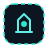
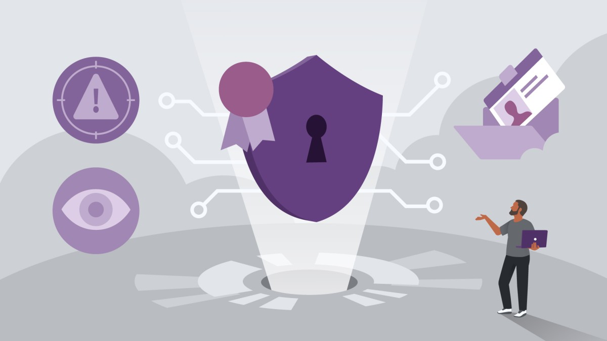
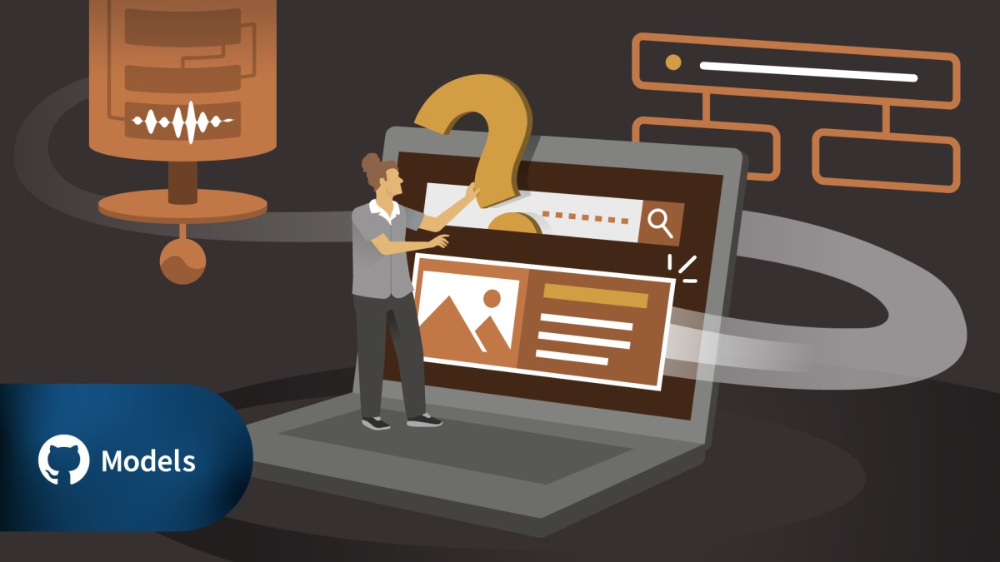
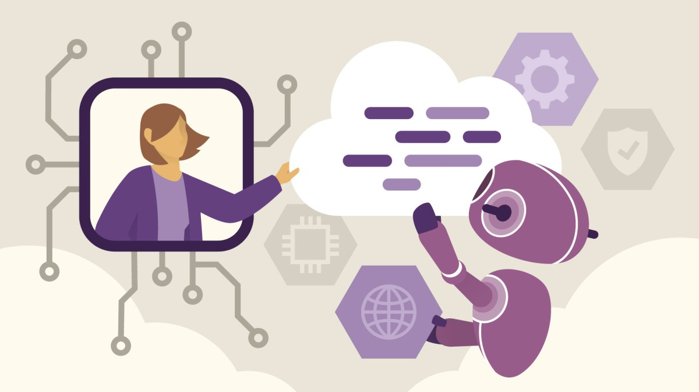
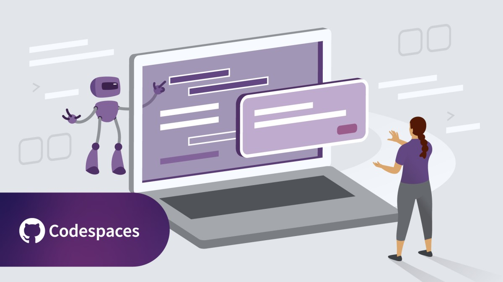
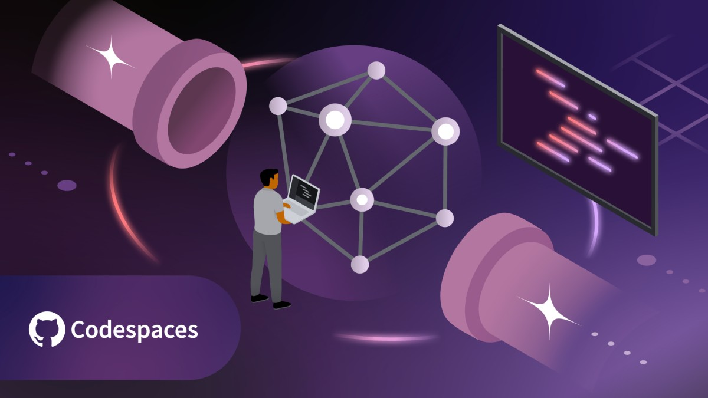
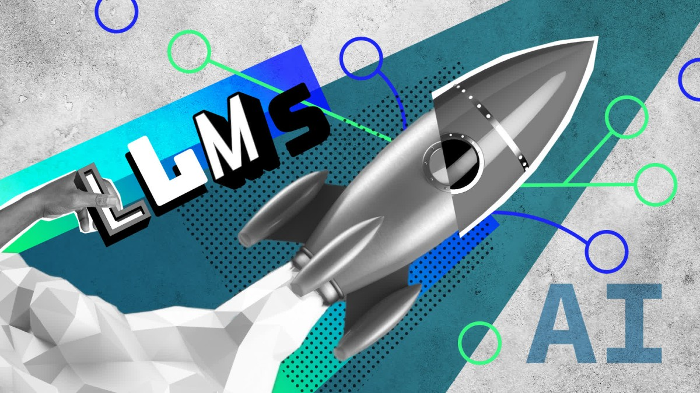
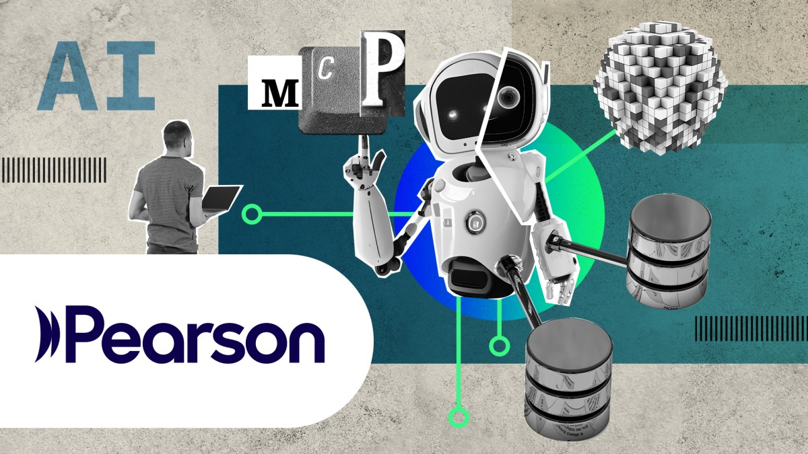

My Career Roadmap
24-month path to Senior DevOps Engineer.
Tech
Leadership
Business / Finance
Full roadmap ≈ ~8 months study time at 2h/day · calendar plan remains 24 months
I can spend
hours / day
Baseline completed

Q1 · AWS DevOps + Business mindset Foundation
Months 1–4 · Sep–Dec 2026
Months 1–4 · Sep–Dec 2026

 EKS Workshop — Fundamentals
EKS Workshop — Fundamentals
 AWS DevOps overview (~1 week)
AWS DevOps overview (~1 week)
 Terraform Associate (004) prep
Terraform Associate (004) prep
Business Real World — AWS infra design
AWS DevOps Engineer Pro (DOP-C02) + 2× Associate certs
Q2 · AWS Architect Pro + FinOps & AI
Months 5–7 · Jan–Mar 2027
Months 5–7 · Jan–Mar 2027
 Strategic Financial Intelligence for Business Leaders
Strategic Financial Intelligence for Business Leaders
 Corporate Finance for Non-Financial Managers
Corporate Finance for Non-Financial Managers
 Economics for Business Leaders
Economics for Business Leaders
 Finance Strategies for Business Leaders
Finance Strategies for Business Leaders
 DevOps for Managers
Strategic Financial Management in Corporations
DevOps for Managers
Strategic Financial Management in Corporations

Enterprise FinOps · Payment Hub cost model
Q3 · AWS SRE + Security (Enterprise mindset)
Months 8–11 · Apr–Jul 2027
Months 8–11 · Apr–Jul 2027
 Managing and Leading Developers
Managing and Leading Developers
 Developer → Engineering Manager
Developer → Engineering Manager
 Succeeding as a First-Time Tech Manager
Succeeding as a First-Time Tech Manager
 Coaching Skills for Leaders
Coaching Skills for Leaders
 Difficult Conversations
Difficult Conversations
Mentor · lead initiative · facilitate
 SRE Foundation — enterprise reliability mindset
SRE Foundation — enterprise reliability mindset
 Monitoring & Observability on AWS workloads
Site Reliability Engineering: The Big Picture
Monitoring & Observability on AWS workloads
Site Reliability Engineering: The Big Picture

AWS Security Specialty (SCS-C02) Cert Prep Learning AWS Security
SLI / SLO · alerting · runbook · postmortem (AWS)
AWS Security Specialty — exam target
Q4 · AI for DevOps & Platform Engineering
Months 12–14 · Aug–Oct 2027
Months 12–14 · Aug–Oct 2027


Generative AI: Working with Large Language Models
Leveraging Agentic AI in Cloud Computing
Pair Programming with AI
Fundamentals of AI Engineering
Advanced LLMOps: Deploying LLMs in Production
Build AI Agents with Model Context Protocol (MCP)
AI-assisted pipeline · internal DevOps copilot
Q5 · Kubernetes & GitOps (Advanced)
Months 15–17 · Nov 2027–Jan 2028
Months 15–17 · Nov 2027–Jan 2028

 Kubernetes: Your First Project
Kubernetes: Your First Project
 KCNA Cert Prep
KCNA Cert Prep
 Automating Kubernetes with GitOps
Automating Kubernetes with GitOps
 Kubernetes + Terraform on AWS (EKS)
Kubernetes + Terraform on AWS (EKS)
Helm staging / prod · Argo CD / Flux
Q6 · Platform Engineering & CI/CD at Scale
Months 18–20 · Feb–Apr 2028
Months 18–20 · Feb–Apr 2028
Corporate Finance for Non-Financial Managers
Finance Strategies for Business Leaders
Cost-saving proposal · platform ROI
 Build a CI/CD Pipeline
Build a CI/CD Pipeline
 GitHub Actions for CI/CD
GitHub Actions for CI/CD
 GitHub Actions Workshop
Essential Terraform in AWS (advanced modules)
GitHub Actions Workshop
Essential Terraform in AWS (advanced modules)
Architecture Decision Record · platform standards
Q7 · Enterprise Architecture & Strategy
Months 21–22 · May–Jun 2028
Months 21–22 · May–Jun 2028
Multi-account AWS landing zone design
 IaC governance & policy as code
IaC governance & policy as code
Year 2 milestone — portfolio & ownership
Q8 · Senior packaging
Months 23–24 · Jul–Aug 2028
Months 23–24 · Jul–Aug 2028
 Starting Your Career in Tech: DevOps
Starting Your Career in Tech: DevOps
 Writing a Tech Resume
AWS DevOps Pro (optional refresh)
Writing a Tech Resume
AWS DevOps Pro (optional refresh)
Terraform Associate (optional)